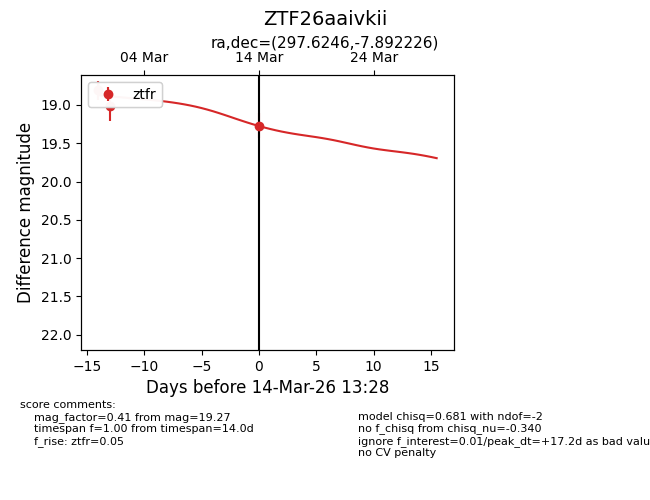
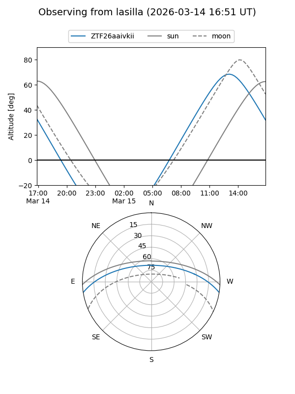
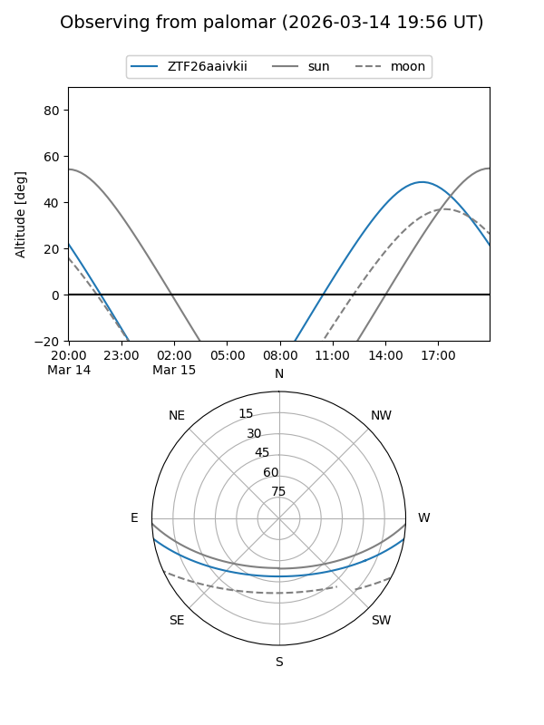
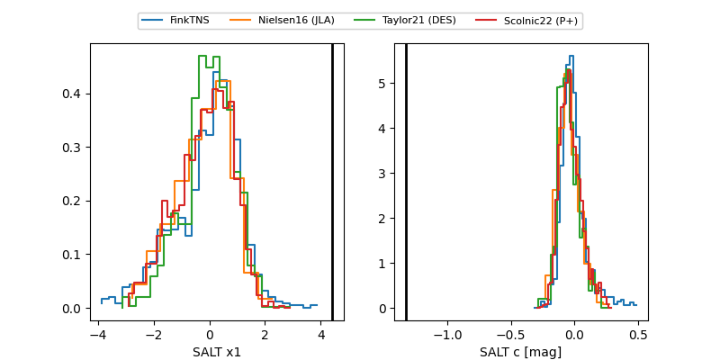

ZTF26aaivkii
Target ZTF26aaivkii at 2026-03-14 13:31
Aliases and brokers:
FINK: link
Lasair: link
ALeRCE: link
alt names
ZTF26aaivkii (ztf,fink_ztf)
Coordinates:
equatorial (ra, dec) = 297.6246,-7.89223
equatorial (HMS+DMS) = 19:50:29.90,-07:53:32.01
galactic (l, b) = (32.5075,-16.69532)
Flags:
Photometry:
last ztfr=19.27
3 ztfr detections
Lightcurve

Visibility


Additional plots
